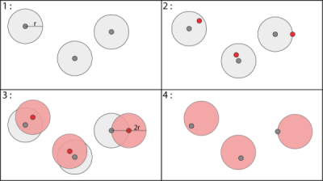

Plugin to blur point data, such as health personal data, and get some statistics about this blurring.

1 : Creating a buffer (radius r)
2 : Random selection of a point in each buffer
3 : Creating a buffer around the new point with the same radius. The initial point is at a maximal distance 2r of the centroid of the buffer.
4 : Deleting the random point and the first buffer
The envelope layer will force the algorithm to have an intersection between the centroid and this layer. This is like a mask.
The plugin asks two layers :